Code
library(tidyverse)
library(ggside)
library(brms)
library(broom)
library(broom.mixed)Princeton University
KW
April 2, 2025
Here is a worksheet and assignment that combines Bayes (brms) with tidyverse tools. The focus is on the essentials when it comes to simple linear regression with brms.
Please read and run through this worksheet and answer the conceptual questions that are interleaved within them. At the end of each part, is a coding exercise based on the material you’ve read until then.
Load the primary packages.
We’ll use the penguins data set from the palmerpenguins package.
Rows: 344
Columns: 8
$ species <fct> Adelie, Adelie, Adelie, Adelie, Adelie, Adelie, Adel…
$ island <fct> Torgersen, Torgersen, Torgersen, Torgersen, Torgerse…
$ bill_length_mm <dbl> 39.1, 39.5, 40.3, NA, 36.7, 39.3, 38.9, 39.2, 34.1, …
$ bill_depth_mm <dbl> 18.7, 17.4, 18.0, NA, 19.3, 20.6, 17.8, 19.6, 18.1, …
$ flipper_length_mm <int> 181, 186, 195, NA, 193, 190, 181, 195, 193, 190, 186…
$ body_mass_g <int> 3750, 3800, 3250, NA, 3450, 3650, 3625, 4675, 3475, …
$ sex <fct> male, female, female, NA, female, male, female, male…
$ year <int> 2007, 2007, 2007, 2007, 2007, 2007, 2007, 2007, 2007…# A tibble: 6 × 8
species island bill_length_mm bill_depth_mm flipper_length_mm body_mass_g
<fct> <fct> <dbl> <dbl> <int> <int>
1 Adelie Torgersen 39.1 18.7 181 3750
2 Adelie Torgersen 39.5 17.4 186 3800
3 Adelie Torgersen 40.3 18 195 3250
4 Adelie Torgersen NA NA NA NA
5 Adelie Torgersen 36.7 19.3 193 3450
6 Adelie Torgersen 39.3 20.6 190 3650
# ℹ 2 more variables: sex <fct>, year <int>You might divide the data set by the three levels of species.
# A tibble: 3 × 2
species n
<fct> <int>
1 Adelie 152
2 Chinstrap 68
3 Gentoo 124To start, we’ll make a subset of the data called chinstrap.
Rows: 68
Columns: 8
$ species <fct> Chinstrap, Chinstrap, Chinstrap, Chinstrap, Chinstra…
$ island <fct> Dream, Dream, Dream, Dream, Dream, Dream, Dream, Dre…
$ bill_length_mm <dbl> 46.5, 50.0, 51.3, 45.4, 52.7, 45.2, 46.1, 51.3, 46.0…
$ bill_depth_mm <dbl> 17.9, 19.5, 19.2, 18.7, 19.8, 17.8, 18.2, 18.2, 18.9…
$ flipper_length_mm <int> 192, 196, 193, 188, 197, 198, 178, 197, 195, 198, 19…
$ body_mass_g <int> 3500, 3900, 3650, 3525, 3725, 3950, 3250, 3750, 4150…
$ sex <fct> female, male, male, female, male, female, female, ma…
$ year <int> 2007, 2007, 2007, 2007, 2007, 2007, 2007, 2007, 2007…We’ve done from a full data set with \(N = 344\) rows, to a subset with \(n = 68\) rows. (“$” signs hold LaTex snippets)
Our focal variables will be body_mass_g and bill_length_mm. Here they are in a scatter plot.
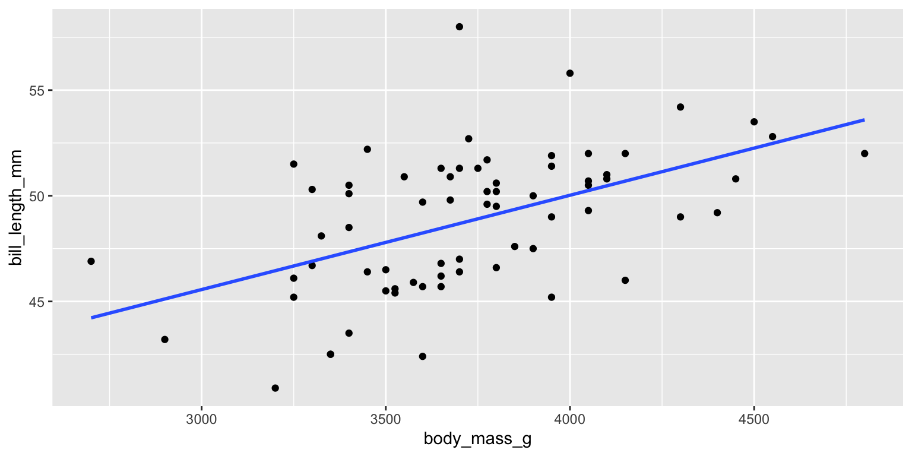
We can augment the plot with some nice functions from the ggside package.
chinstrap %>%
ggplot(aes(x = body_mass_g, y = bill_length_mm)) +
geom_point() +
stat_smooth(method = "lm", formula = 'y ~ x', se = FALSE) +
# from ggside
geom_xsidehistogram(bins = 30) +
geom_ysidehistogram(bins = 30) +
scale_xsidey_continuous(breaks = NULL) +
scale_ysidex_continuous(breaks = NULL) +
theme(ggside.panel.scale = 0.25)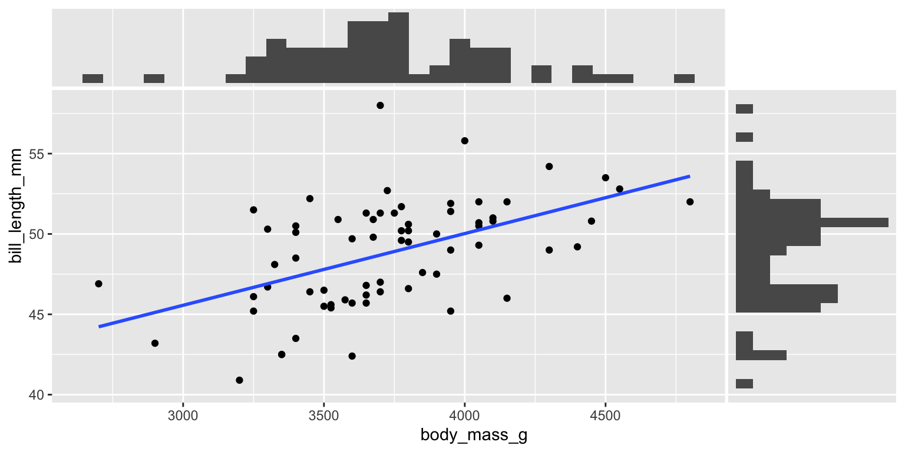
It’s a good idea to get a sense of the sample statistics. Here are the means and SD’s for the two variables.
# A tibble: 1 × 4
body_mass_g_mean body_mass_g_sd bill_length_mm_mean bill_length_mm_sd
<dbl> <dbl> <dbl> <dbl>
1 3733. 384. 48.8 3.34And you know that more efficient way to compute sample statistics for multiple variables is to first convert the data into the long format with pivot_longer(). Then you use a group_by() line before the main event in summarise().
# A tibble: 2 × 4
name mean sd n_missing
<chr> <dbl> <dbl> <int>
1 bill_length_mm 48.8 3.34 0
2 body_mass_g 3733. 384. 0The distribution of body_mass_g and bill_length_mm are probably not gaussian. They both look kinda bimodal.We’ll fit the model
\[ \begin{aligned} \text{bill\_length\_mm}\_i &= \beta_0 + \beta_1 \text{body\_mass\_g}\_i + \epsilon_i \\ \epsilon_i &\sim \operatorname{Normal}(0, \sigma\_\epsilon) \\ \end{aligned} \]
where bill_length_mm is the dependent variable or a response variable. The sole predictor is body_mass_g. Both variables have \(i\) subscripts, which indicate they vary across the \(i\) rows in the data set. For now, you might think if \(i\) as standing for “index.” The last term in the first line, \(\epsilon\), is often called the error, or noise term. In the second line, we see we’re making the conventional assumption the “errors” are normally distributed around the regression line.
An alternative and equivalent way to write that equation is
\[ \begin{aligned} \text{bill\_length\_mm}_i &\sim \operatorname{Normal}(\mu_i, \sigma) \\ \mu_i &= \beta_0 + \beta_1 \text{body\_mass\_g}_i \end{aligned} \]
which is meant to convey we are modeling bill_length_mm as normally distributed, with a conditional mean. You don’t tend to see equations written this way in the OLS paradigm. However, this style of notation will serve us better when we start modeling our data with other distributions.
This notation grows on you
Fitting the model with the base R lm() function, which uses the OLS algorithm.
Call:
lm(formula = bill_length_mm ~ 1 + body_mass_g, data = chinstrap)
Residuals:
Min 1Q Median 3Q Max
-5.8399 -2.2370 0.3247 1.8385 9.3138
Coefficients:
Estimate Std. Error t value Pr(>|t|)
(Intercept) 3.217e+01 3.443e+00 9.344 1.07e-13 ***
body_mass_g 4.463e-03 9.176e-04 4.863 7.48e-06 ***
---
Signif. codes: 0 '***' 0.001 '**' 0.01 '*' 0.05 '.' 0.1 ' ' 1
Residual standard error: 2.887 on 66 degrees of freedom
Multiple R-squared: 0.2638, Adjusted R-squared: 0.2527
F-statistic: 23.65 on 1 and 66 DF, p-value: 7.48e-06The point estimates are in scientific notation. We can pull them with the coef() function.
We can compute fitted values, or predictions, with the predict() function. Here’s the default behavior.
1 2 3 4 5 6 7 8
47.79362 49.57870 48.46303 47.90519 48.79773 49.80183 46.67795 48.90930
9 10 11 12 13 14 15 16
50.69437 48.68616 49.13243 49.02086 48.68616 50.24810 48.12832 50.24810
17 18 19 20 21 22 23 24
46.90108 48.68616 47.57049 51.81005 48.23989 47.34735 45.11601 49.13243
25 26 27 28 29 30 31 32
46.90108 50.69437 47.34735 49.13243 48.68616 52.47945 46.45481 51.36378
33 34 35 36 37 38 39 40
47.12422 50.47124 48.23989 49.57870 49.35556 53.59512 44.22347 52.25632
41 42 43 44 45 46 47 48
49.80183 48.46303 48.01676 47.79362 48.57459 52.03318 47.34735 51.36378
49 50 51 52 53 54 55 56
46.67795 48.57459 47.01265 49.80183 48.23989 50.24810 47.12422 47.57049
57 58 59 60 61 62 63 64
46.67795 50.24810 49.13243 47.90519 49.80183 48.46303 48.46303 50.02497
65 66 67 68
47.34735 49.02086 50.47124 49.02086 We get one prediction, one fitted value, for each case in the data set. We can express the uncertainty around those predictions with confidence intervals.
fit lwr upr
1 47.79362 46.97456 48.61268
2 49.57870 48.81580 50.34160
3 48.46303 47.74771 49.17834
4 47.90519 47.10905 48.70133
5 48.79773 48.09864 49.49682
6 49.80183 48.99783 50.60584We might also ask for a standard error for each prediction.
fit se.fit df residual.scale
1 47.79362 0.4102359 66 2.886728
2 49.57870 0.3821060 66 2.886728
3 48.46303 0.3582736 66 2.886728
4 47.90519 0.3987564 66 2.886728
5 48.79773 0.3501459 66 2.886728
6 49.80183 0.4026961 66 2.886728
7 46.67795 0.5648454 66 2.886728
8 48.90930 0.3504110 66 2.886728
9 50.69437 0.5185569 66 2.886728
10 48.68616 0.3513814 66 2.886728
11 49.13243 0.3554108 66 2.886728
12 49.02086 0.3521734 66 2.886728
13 48.68616 0.3513814 66 2.886728
14 50.24810 0.4550963 66 2.886728
15 48.12832 0.3789333 66 2.886728
16 50.24810 0.4550963 66 2.886728
17 46.90108 0.5296025 66 2.886728
18 48.68616 0.3513814 66 2.886728
19 47.57049 0.4359183 66 2.886728
20 51.81005 0.7050167 66 2.886728
21 48.23989 0.3707575 66 2.886728
22 47.34735 0.4647215 66 2.886728
23 45.11601 0.8407923 66 2.886728
24 49.13243 0.3554108 66 2.886728
25 46.90108 0.5296025 66 2.886728
26 50.69437 0.5185569 66 2.886728
27 47.34735 0.4647215 66 2.886728
28 49.13243 0.3554108 66 2.886728
29 48.68616 0.3513814 66 2.886728
30 52.47945 0.8273195 66 2.886728
31 46.45481 0.6015246 66 2.886728
32 51.36378 0.6270243 66 2.886728
33 47.12422 0.4961023 66 2.886728
34 50.47124 0.4856973 66 2.886728
35 48.23989 0.3707575 66 2.886728
36 49.57870 0.3821060 66 2.886728
37 49.35556 0.3661365 66 2.886728
38 53.59512 1.0397147 66 2.886728
39 44.22347 1.0105441 66 2.886728
40 52.25632 0.7859885 66 2.886728
41 49.80183 0.4026961 66 2.886728
42 48.46303 0.3582736 66 2.886728
43 48.01676 0.3882941 66 2.886728
44 47.79362 0.4102359 66 2.886728
45 48.57459 0.3541019 66 2.886728
46 52.03318 0.7451900 66 2.886728
47 47.34735 0.4647215 66 2.886728
48 51.36378 0.6270243 66 2.886728
49 46.67795 0.5648454 66 2.886728
50 48.57459 0.3541019 66 2.886728
51 47.01265 0.5126128 66 2.886728
52 49.80183 0.4026961 66 2.886728
53 48.23989 0.3707575 66 2.886728
54 50.24810 0.4550963 66 2.886728
55 47.12422 0.4961023 66 2.886728
56 47.57049 0.4359183 66 2.886728
57 46.67795 0.5648454 66 2.886728
58 50.24810 0.4550963 66 2.886728
59 49.13243 0.3554108 66 2.886728
60 47.90519 0.3987564 66 2.886728
61 49.80183 0.4026961 66 2.886728
62 48.46303 0.3582736 66 2.886728
63 48.46303 0.3582736 66 2.886728
64 50.02497 0.4272392 66 2.886728
65 47.34735 0.4647215 66 2.886728
66 49.02086 0.3521734 66 2.886728
67 50.47124 0.4856973 66 2.886728
68 49.02086 0.3521734 66 2.886728Instead of relying on predictions from the values in the data, we might instead define a sequence of values from the predictor variable. We’ll call those nd.
Rows: 50
Columns: 1
$ body_mass_g <dbl> 2700.000, 2742.857, 2785.714, 2828.571, 2871.429, 2914.286…We can insert our nd data into the newdata argument.
fit lwr upr
1 44.22347 42.20585 46.24108
2 44.41473 42.47057 46.35888
3 44.60598 42.73489 46.47708
4 44.79724 42.99874 46.59574
5 44.98850 43.26207 46.71493
6 45.17976 43.52482 46.83469Now we wrangle those predictions a bit and pump the results right into ggplot().
predict(fit1.ols,
interval = "confidence",
newdata = nd) %>%
data.frame() %>%
bind_cols(nd) %>%
ggplot(aes(x = body_mass_g)) +
# 95% confidence interval ribbon
geom_ribbon(aes(ymin = lwr, ymax = upr),
alpha = 1/3) +
# point estimate line
geom_line(aes(y = fit)) +
geom_point(data = chinstrap,
aes(y = bill_length_mm))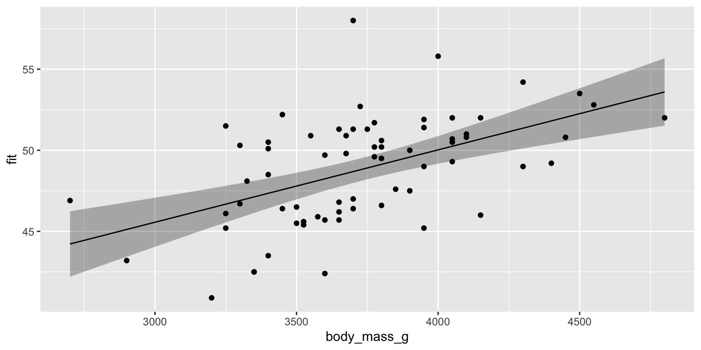
If we wanted to, we could look at the residuals with help from the residuals() function.
1 2 3 4 5 6 7
-1.2936220 0.4213003 2.8369738 -2.5051894 3.9022718 -4.6018344 -0.5779485
8 9 10 11 12 13 14
2.3907044 -4.6943732 2.6138391 -2.5324303 2.6791371 -1.6861609 1.7518962
15 16 17 18 19 20 21
-2.2283241 0.2518962 3.3989168 9.3138391 -1.1704873 -2.6100467 -5.8398915
22 23 24 25 26 27 28
1.1526474 -1.9160056 1.4675697 -0.2010832 1.3056268 3.1526474 0.3675697
29 30 31 32 33 34 35
-2.2861609 0.3205492 -5.5548138 2.8362227 -4.6242179 0.5287615 1.4601085
36 37 38 39 40 41 42
-2.0786997 -1.7555650 -1.5951243 2.6765332 1.2436839 -0.8018344 -2.2630262
43 44 45 46 47 48 49
2.8832432 -2.2936220 2.3254065 -1.2331814 2.7526474 -2.3637773 4.8220515
50 51 52 53 54 55 56
1.2254065 1.0873494 1.5981656 -2.5398915 0.4518962 -4.6242179 4.6295127
57 58 59 60 61 62 63
-1.4779485 -0.9481038 1.0675697 -2.3051894 2.0981656 -1.6630262 -2.7630262
64 65 66 67 68
5.7750309 -3.8473526 0.5791371 0.3287615 1.1791371 Here we might put them in a tibble and display them in a plot.
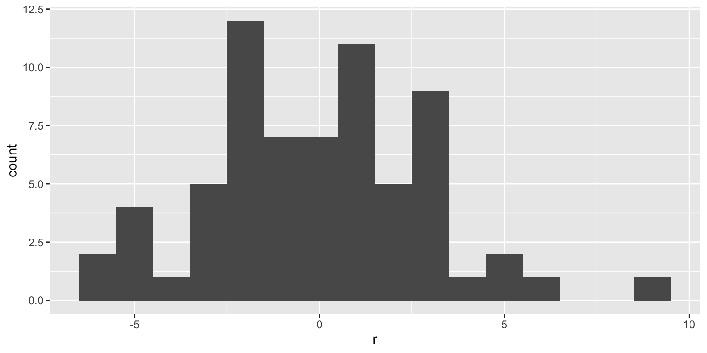
[1] 0.004462694[1] 9.262102e-06[1] 32.17419[1] 3.339256The estimate for the intercept is 32.17 with a standard deviation of 3.40. The standard deviation is not computed from the residuals but the simple SD of the y is a good enough estimate here. Both are pretty close to the estimated value from the model.
The mean value for the slope is 0.0045 and the standard deviation is 9.26e-06. These are quite similar to the values from our ols model.\[ \begin{aligned} \text{bill\_length\_mm}_i = 32.17 + 0.0045 * \text{body\_mass\_g}_i \end{aligned} \]
We’ll be fitting our Bayesian models with the brms package. The primary function is brm().
brm() can work a lot like the OLS-based lm() function. For example, here’s how to fit a Bayesian version of our OLS model fit1.ols.
Notice what’s happening in the console, below. We’ll get into the details of what just happened later. For now, appreciate we just fit our first Bayesian model, and it wasn’t all that hard.
Summarize the model.
Family: gaussian
Links: mu = identity; sigma = identity
Formula: bill_length_mm ~ 1 + body_mass_g
Data: chinstrap (Number of observations: 68)
Draws: 4 chains, each with iter = 2000; warmup = 1000; thin = 1;
total post-warmup draws = 4000
Regression Coefficients:
Estimate Est.Error l-95% CI u-95% CI Rhat Bulk_ESS Tail_ESS
Intercept 32.13 3.49 25.12 38.97 1.00 4706 2982
body_mass_g 0.00 0.00 0.00 0.01 1.00 4719 2959
Further Distributional Parameters:
Estimate Est.Error l-95% CI u-95% CI Rhat Bulk_ESS Tail_ESS
sigma 2.91 0.26 2.46 3.46 1.00 1776 1573
Draws were sampled using sampling(NUTS). For each parameter, Bulk_ESS
and Tail_ESS are effective sample size measures, and Rhat is the potential
scale reduction factor on split chains (at convergence, Rhat = 1).brm() output from the in the lm() output. Ignore ‘Rhat,’ ‘Bulk_ESS,’ and ‘Tail_ESS’ for now.The estimated values are pretty similar in both models.
The frequentist model shows t and p value for all parameters.
The bayesian model shows the 95% confidence interval for all parameters.We can get a quick and dirty plot of the fitted line with the conditional_effects() function.
We might want to compare the coefficient summaries from the OLS model to those from the Bayesian model. Here’s the frequentist summary:
2.5 % 97.5 %
(Intercept) 32.174192865 3.4433622902 25.299298235 39.049087495
body_mass_g 0.004462694 0.0009176106 0.002630625 0.006294763We can compute a focused summary of the Bayesian model with the fixef() function.
Estimate Est.Error Q2.5 Q97.5
Intercept 32.134697497 3.4895750251 25.118207632 38.968337279
body_mass_g 0.004476585 0.0009304701 0.002656551 0.006349207In this case, the results are very similar.
We can also pull this information from our OLS model with the broom::tidy() function.
# A tibble: 2 × 7
term estimate std.error statistic p.value conf.low conf.high
<chr> <dbl> <dbl> <dbl> <dbl> <dbl> <dbl>
1 (Intercept) 32.2 3.44 9.34 1.07e-13 25.3 39.0
2 body_mass_g 0.00446 0.000918 4.86 7.48e- 6 0.00263 0.00629If you would like to use the tidy() function with your brms models, it will have to be the version of tidy() from the broom.mixed package.
# A tibble: 3 × 8
effect component group term estimate std.error conf.low conf.high
<chr> <chr> <chr> <chr> <dbl> <dbl> <dbl> <dbl>
1 fixed cond <NA> (Intercept) 32.1 3.49 25.1 39.0
2 fixed cond <NA> body_mass_g 0.00448 0.000930 0.00266 0.00635
3 ran_pars cond Residual sd__Observa… 2.91 0.255 2.46 3.46 Here’s how to wrangle and combine these two results into a single data frame. Then we’ll make a coefficient plot.
bind_rows(
tidy(fit1.ols, conf.int = TRUE) %>% select(term, estimate, contains("conf")),
tidy(fit1.b) %>% select(term, estimate, contains("conf")) %>% filter(term != "sd__Observation")
) %>%
mutate(method = rep(c("lm()", "brm()"), each = 2)) %>%
ggplot(aes(x = estimate, xmin = conf.low, xmax = conf.high, y = method)) +
geom_pointrange() +
scale_x_continuous("parameter space", expand = expansion(mult = 0.2)) +
scale_y_discrete(expand = expansion(mult = 5)) +
facet_wrap(~ term, scales = "free_x")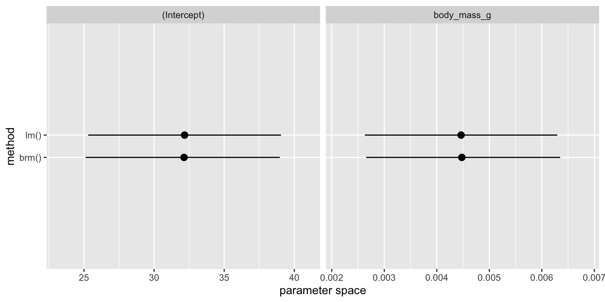
At a superficial level for simple conventional regression type models, the results from a Bayesian brm() model will be very similar to those from an OLS lm() model. This will not always be case, and even in this example there are many differences once we look below the surface.
Go back to the full penguins data set. This time, make a subset of the data called gentoo, which is only the cases for which species == "Gentoo".
Can you fit the same OLS model to these data?
How about plotting the results with predict()?
gentoo_filtered = gentoo %>% filter(!is.na(body_mass_g))
od2 <- tibble(body_mass_g = gentoo_filtered$body_mass_g)
predict(fit2.ols,
interval = "confidence") %>%
data.frame() %>%
bind_cols(od2) %>%
ggplot(aes(x = body_mass_g)) +
# 95% confidence interval ribbon
geom_ribbon(aes(ymin = lwr, ymax = upr),
alpha = 1/3) +
# point estimate line
geom_line(aes(y = fit)) +
geom_point(data = gentoo_filtered,
aes(y = bill_length_mm))nd2 <- tibble(body_mass_g = seq(from = min(gentoo$body_mass_g, na.rm=TRUE),
to = max(gentoo$body_mass_g, na.rm=TRUE),
length.out = 50))
predict(fit2.ols,
interval = "confidence",
newdata = nd2) %>%
data.frame() %>%
bind_cols(nd2) %>%
ggplot(aes(x = body_mass_g)) +
# 95% confidence interval ribbon
geom_ribbon(aes(ymin = lwr, ymax = upr),
alpha = 1/3) +
# point estimate line
geom_line(aes(y = fit)) +
geom_point(data = gentoo,
aes(y = bill_length_mm))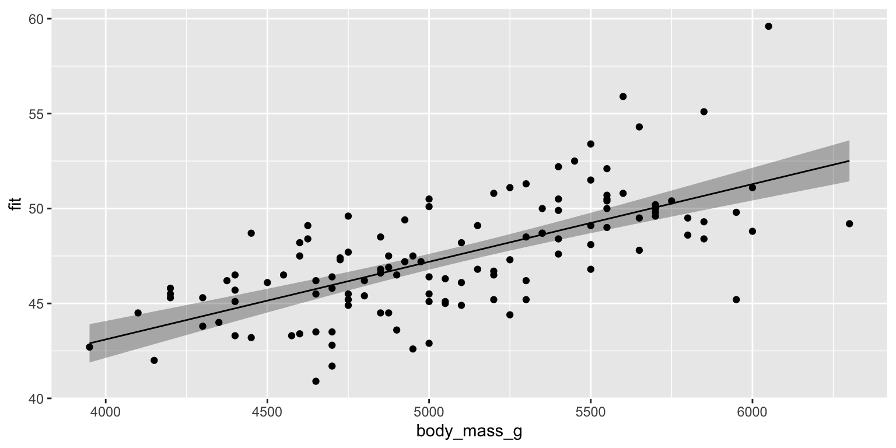
Can you fit the same default Bayesian brm() model to these data?
How about plotting the results with conditional_effects()?
Can you make a coefficient plot comparing the new OLS and Bayesian beta coefficients?
bind_rows(
tidy(fit2.ols, conf.int = TRUE) %>% select(term, estimate, contains("conf")),
tidy(fit2.b) %>% select(term, estimate, contains("conf")) %>% filter(term != "sd__Observation")
) %>%
mutate(method = rep(c("lm()", "brm()"), each = 2)) %>%
ggplot(aes(x = estimate, xmin = conf.low, xmax = conf.high, y = method)) +
geom_pointrange() +
scale_x_continuous("parameter space", expand = expansion(mult = 0.2)) +
scale_y_discrete(expand = expansion(mult = 5)) +
facet_wrap(~ term, scales = "free_x")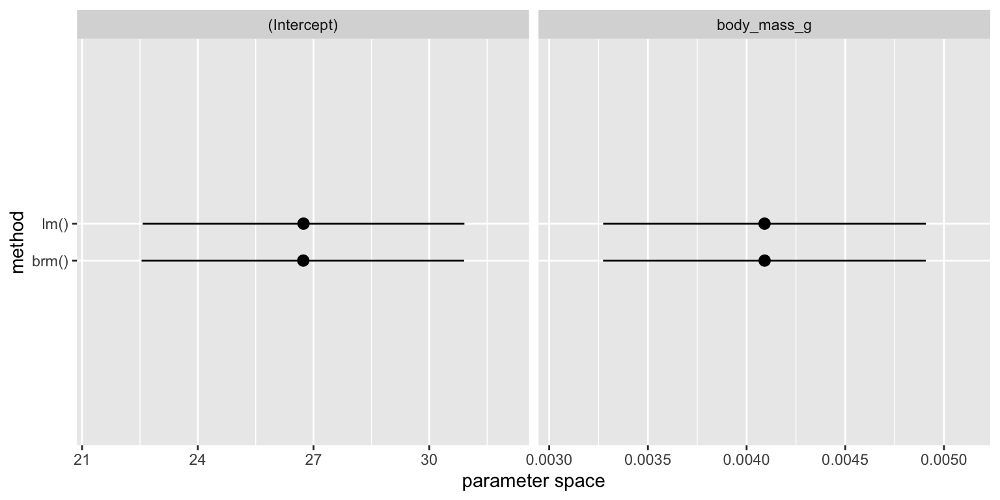
We can extract the posterior draws from our Bayesian models with the as_draws_df() function.
# A draws_df: 1000 iterations, 4 chains, and 6 variables
b_Intercept b_body_mass_g sigma Intercept lprior lp__
1 32 0.0045 3.0 49 -4.3 -171
2 34 0.0039 2.8 49 -4.2 -171
3 30 0.0051 2.9 49 -4.3 -172
4 31 0.0046 2.7 49 -4.3 -171
5 30 0.0052 3.4 49 -4.4 -173
6 35 0.0036 3.4 49 -4.4 -173
7 35 0.0039 3.0 49 -4.3 -171
8 32 0.0043 2.7 48 -4.3 -172
9 33 0.0043 2.8 49 -4.2 -171
10 33 0.0042 2.9 49 -4.3 -171
# ... with 3990 more draws
# ... hidden reserved variables {'.chain', '.iteration', '.draw'}Note the meta data. We can get a sense of the full posterior distributions of the \(\beta\) parameters with plots.
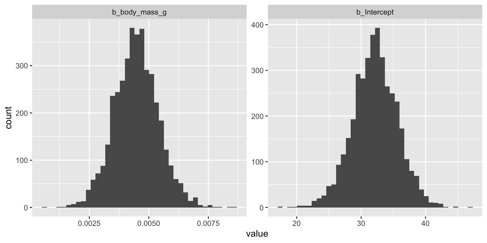
We might summarize those posterior distributions with basic descriptive statistics, like their means, SD’s, and inner 95-percentile range.
# A tibble: 2 × 5
name mean sd ll ul
<chr> <dbl> <dbl> <dbl> <dbl>
1 b_Intercept 32.1 3.49 25.1 39.0
2 b_body_mass_g 0.00448 0.000930 0.00266 0.00635Notice how these values match up exactly with those from fixef().
Estimate Est.Error Q2.5 Q97.5
Intercept 32.134697497 3.4895750251 25.118207632 38.968337279
body_mass_g 0.004476585 0.0009304701 0.002656551 0.006349207Thus,
These are not exactly the same, mind you. But they serve similar functions.
We can also get a sense of these distributions with the plot() function.
Ignore the trace plots on the right for a moment. And let’s consider the pairs() plot.
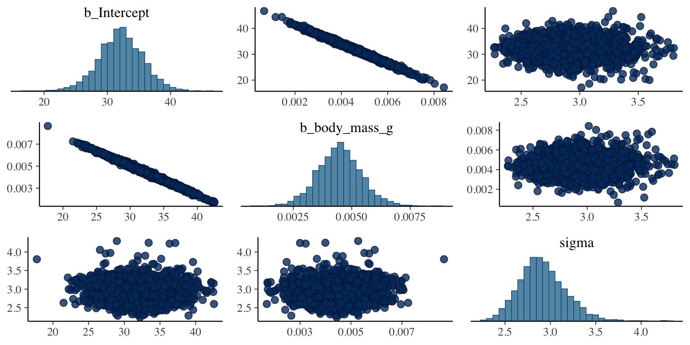
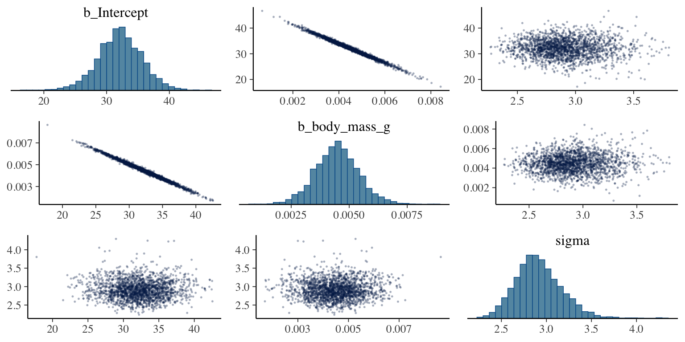
The diagonal ones are the marginal distributions of individual parameters.
The off-diagnoal ones are the bivariate marginal distributions, or the joint distributions of the paired two parameters, marginalized over the remaining parameters.Notice how the two \(\beta\) parameters seem to have a strong negative correlation. We can quantify that correlation with the vcov() function.
Intercept body_mass_g
Intercept 12.17713386 -3.231560e-03
body_mass_g -0.00323156 8.657746e-07 Intercept body_mass_g
Intercept 1.0000000 -0.9952617
body_mass_g -0.9952617 1.0000000This correlation/covariance among the parameters is not unique to Bayesian models. Here’s the vcov() output for the OLS model.
(Intercept) body_mass_g
(Intercept) 11.856743861 -3.143295e-03
body_mass_g -0.003143295 8.420092e-07I’m not aware of an easy way to get that output in a correlation metric for our OLS model. Here’s how to compute the correlation by hand.
[1] -0.9948188That code follows the definition of a covariance, which can be expressed as
\[ \text{Cov}(x, y) = \rho \sigma_x \sigma_y, \]
where \(\sigma_x\) is the standard deviation for x, \(\sigma_y\) is the standard deviation for y, and \(\rho\) is their correlation. And thus, you can convert a covariance into a correlation with the formula
\[ \rho = \frac{\sigma_{xy}}{\sigma_x \sigma_y}, \]
where \(\sigma_{xy}\) is the covariance of x and y.
Let’s save the as_draws_df() output for our model as an object called draws.
Rows: 4,000
Columns: 9
$ b_Intercept <dbl> 31.91014, 34.44629, 30.24621, 31.27667, 29.60343, 35.426…
$ b_body_mass_g <dbl> 0.004488582, 0.003905465, 0.005091887, 0.004635125, 0.00…
$ sigma <dbl> 2.999862, 2.779877, 2.944221, 2.686662, 3.362299, 3.3930…
$ Intercept <dbl> 48.66641, 49.02574, 49.25468, 48.58000, 48.89175, 48.896…
$ lprior <dbl> -4.322328, -4.244607, -4.276130, -4.254156, -4.399914, -…
$ lp__ <dbl> -171.0782, -171.1802, -171.7580, -171.3797, -172.6857, -…
$ .chain <int> 1, 1, 1, 1, 1, 1, 1, 1, 1, 1, 1, 1, 1, 1, 1, 1, 1, 1, 1,…
$ .iteration <int> 1, 2, 3, 4, 5, 6, 7, 8, 9, 10, 11, 12, 13, 14, 15, 16, 1…
$ .draw <int> 1, 2, 3, 4, 5, 6, 7, 8, 9, 10, 11, 12, 13, 14, 15, 16, 1…For each parameter in the model, we have 4,000 draws from the posterior.
Since we hae 4000 posterior samples, the spread can tell us how uncertain we are about each parameter. We can also get the mean and the 95% confidence interval from the distribution.
For each value of x, the predictions are made by averaging the predicted values across the 4000 samples of the parameters.\[ \widehat{\text{bill\_length\_mm}}_i = \beta_0 + \beta_1 \text{body\_mass\_g}_i. \]
Let’s break the 4000 draws down with our draws object.
# adjust the parameter names
draws <- draws %>%
mutate(beta0 = b_Intercept,
beta1 = b_body_mass_g)
# Note: go through this one line at a time
draws %>%
select(.draw, beta0, beta1) %>%
mutate(body_mass_g = mean(chinstrap$body_mass_g)) %>%
mutate(y_hat = beta0 + beta1 * body_mass_g) %>%
ggplot(aes(x = y_hat)) +
geom_histogram(bins = 40) +
labs(title = "Bayesians have posterior distributions",
x = expression(hat(italic(y))*'|'*italic(x)==3733.1)) +
coord_cartesian(xlim = c(47, 51))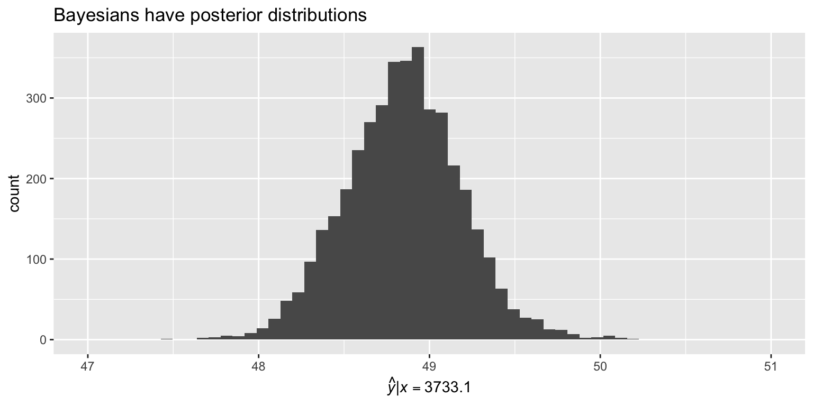
Here’s what that is for the OLS model.
predict(fit1.ols,
newdata = tibble(body_mass_g = mean(chinstrap$body_mass_g)),
interval = "confidence") %>%
data.frame() %>%
ggplot(aes(x = fit, xmin = lwr, xmax = upr, y = 0)) +
geom_pointrange() +
scale_y_continuous(NULL, breaks = NULL) +
labs(title = "Frequentists have point estmates and 95% CI's",
x = expression(hat(italic(y))*'|'*italic(x)==3733.1)) +
coord_cartesian(xlim = c(47, 51))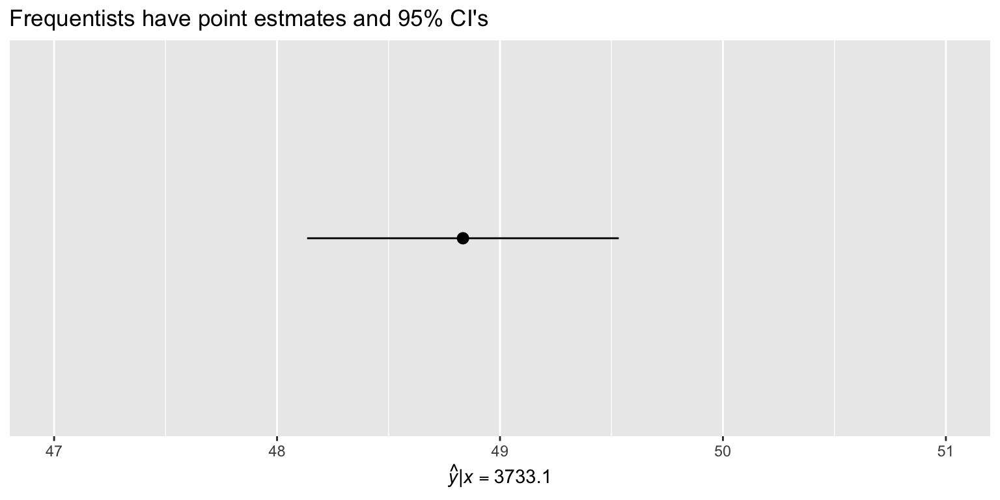
Another handy way to present a Bayesian posterior is as a density with a point-interval summary below.
library(ggdist) #for stat_half_eye and mean_qi
draws %>%
mutate(body_mass_g = mean(chinstrap$body_mass_g)) %>%
mutate(y_hat = beta0 + beta1 * body_mass_g) %>%
ggplot(aes(x = y_hat)) +
stat_halfeye(point_interval = mean_qi, .width = .95) +
# scale_y_continuous(NULL, breaks = NULL) +
labs(title = "Bayesians have posterior distributions",
x = expression(hat(italic(y))*'|'*italic(x)==3733.1)) +
coord_cartesian(xlim = c(47, 51))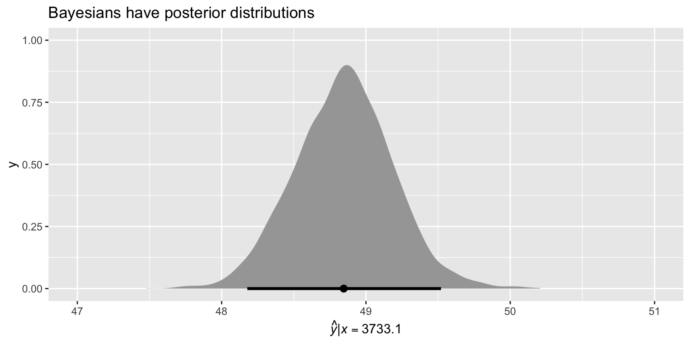
The dot at the base of the plot is the posterior mean, and the horizontal line marks the 95% percentile-based interval. If you’d like to mark the median instead, set point_interval = median_qi. If you’re like a different kind of horizontal interval, adjust the .width argument.
draws %>%
mutate(body_mass_g = mean(chinstrap$body_mass_g)) %>%
mutate(y_hat = beta0 + beta1 * body_mass_g) %>%
ggplot(aes(x = y_hat)) +
# note the changes to this line
stat_halfeye(point_interval = median_qi, .width = c(.5, .99)) +
scale_y_continuous(NULL, breaks = NULL) +
labs(title = "Bayesians have posterior distributions",
subtitle = "The dot marks the median.\nThe thicker line marks the 50% interval, and\nthe thinner line marks the 99% interval.",
x = expression(hat(italic(y))*'|'*italic(x)==3733.1)) +
coord_cartesian(xlim = c(47, 51))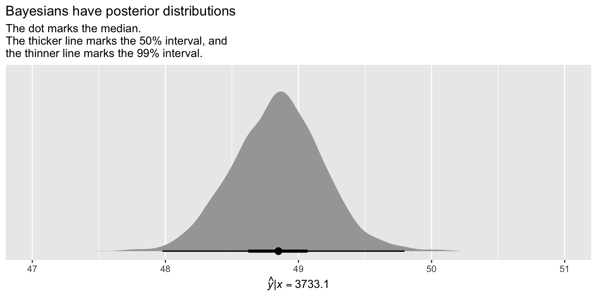
You can describe a Bayesian posterior in a lot of different ways. Earlier we said the posterior mean is the Bayesian point estimate. This isn’t strictly true. Means are very popular, but you can summarize a posterior by its mean, median, or mode.
Let’s see what this looks like in practice. First, we compute and save our statistics for each of our model parameters.
points <- draws %>%
rename(`beta[0]` = beta0,
`beta[1]` = beta1) %>%
pivot_longer(cols = c(`beta[0]`, `beta[1]`, sigma),
names_to = "parameter") %>%
group_by(parameter) %>%
summarise(mean = mean(value),
median = median(value),
mode = Mode(value)) %>%
pivot_longer(starts_with("m"), names_to = "statistic")
# what?
points# A tibble: 9 × 3
parameter statistic value
<chr> <chr> <dbl>
1 beta[0] mean 32.1
2 beta[0] median 32.2
3 beta[0] mode 32.2
4 beta[1] mean 0.00448
5 beta[1] median 0.00447
6 beta[1] mode 0.00448
7 sigma mean 2.91
8 sigma median 2.89
9 sigma mode 2.84 Now plot.
draws %>%
rename(`beta[0]` = beta0,
`beta[1]` = beta1) %>%
pivot_longer(cols = c(`beta[0]`, `beta[1]`, sigma),
names_to = "parameter") %>%
ggplot(aes(x = value)) +
geom_density() +
geom_vline(data = points,
aes(xintercept = value, color = statistic),
size = 3/4) +
scale_color_viridis_d(option = "A", end = .8) +
scale_y_continuous(NULL, breaks = NULL) +
xlab("parameter space") +
facet_wrap(~ parameter, labeller = label_parsed, scales = "free", ncol = 1) +
theme(strip.text = element_text(size = 14))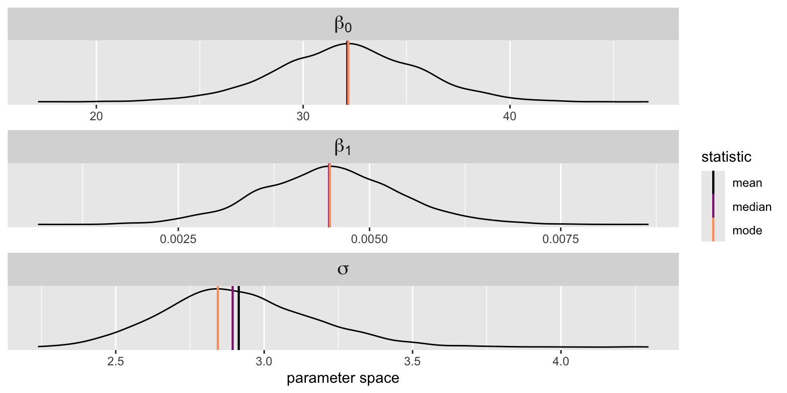
$\sigma$ might be skewed becasue a few reasons.
First, it can't be negative, so it is bounded below 0.
Second, we might have a weak prior for $\sigma$, which will result in posterior uncertainty that includes the possibility of high residual variability, resulting in a longer right tail in the posterior.
Third, there could be some outliers that inflates $\sigma$, making its posterior distribution more right-skewed.With many brms functions, you can request the median by setting robust = TRUE. For example:
Estimate Est.Error Q2.5 Q97.5
Intercept 32.134697497 3.4895750251 25.118207632 38.968337279
body_mass_g 0.004476585 0.0009304701 0.002656551 0.006349207 Estimate Est.Error Q2.5 Q97.5
Intercept 32.16047598 3.3990983222 25.118207632 38.968337279
body_mass_g 0.00447104 0.0009022786 0.002656551 0.006349207The mean is pulled toward the tail, so using the mean of sigma will lead to wider predicted intervals (more conservative), but we might overestimate uncertainty in new predictions if the skew is strong.
The median is robust to the skew, so using the median provides a balanced summary that is not too influenced by tail values.
The mode is often below the mean when the distribution is right skewed, so using the mode of sigma could underestimate uncertainty and produce overconfident predictions.
Overall, it is better to use the entire posterior, which full captures the uncertainty, including the skew, instead of using only a single value of the distribution.Earlier we said the posterior SD is the Bayesian standard error. This isn’t strictly true. You can also use the median absolute deviation (MAD SD). If we let \(M\) stand for the median of some variable \(y\), which varies across \(i\) cases, we can define the MAD SD as
\[ \textit{MAD SD} = 1.4826 \times \operatorname{median}_{i = 1}^n |y_i - M|, \]
where \(1.4826\) is a constant that scales the MAD SD into a standard-deviation metric. Here’s what this looks like in practice.
# A tibble: 1 × 1
MAD_SD
<dbl>
1 3.40Base R also has a mad() function.
Help on topic 'mad' was found in the following packages:
Package Library
posterior /Users/kw1166/Library/Caches/org.R-project.R/R/renv/cache/v5/macos/R-4.4/x86_64-apple-darwin20/posterior/1.6.0/fc1213566f2ed9f0b15bef656ed1000b
stats /Library/Frameworks/R.framework/Versions/4.4-x86_64/Resources/library
Using the first match ...# A tibble: 1 × 1
MAD_SD
<dbl>
1 3.40You can request the MAD SD from many brms functions by setting robust = TRUE.
Estimate Est.Error Q2.5 Q97.5
Intercept 32.134697497 3.4895750251 25.118207632 38.968337279
body_mass_g 0.004476585 0.0009304701 0.002656551 0.006349207 Estimate Est.Error Q2.5 Q97.5
Intercept 32.16047598 3.3990983222 25.118207632 38.968337279
body_mass_g 0.00447104 0.0009022786 0.002656551 0.006349207Bayesians describe the widths of their posteriors with intervals. I’ve seen these variously described as confidence intervals, credible intervals, probability intervals, and even uncertainty intervals. My recommendation is just pick a term, and clearly tell your audience what you mean (e.g., at the end of a Method section in a journal article).
To my eye, the most popular interval is a 95% percentile-based interval. 95% is conventional, perhaps due to the popularity of the 95% frequentist confidence interval, which is related to the 0.05 alpha level used for the conventional \(p\)-value cutoff. However, you can use other percentiles. Some common alternatives are 99%, 89%, 80%, and 50%.
Also, Bayesian intervals aren’t always percentile based. An alternative is the highest posterior density interval (HPDI), which has mathematical properties some find desirable.
brms only supports percentile-based intervals, but it does allow for a variety of different ranges via the prob argument. For example, here’s how to request 80% intervals in summary().
Family: gaussian
Links: mu = identity; sigma = identity
Formula: bill_length_mm ~ 1 + body_mass_g
Data: chinstrap (Number of observations: 68)
Draws: 4 chains, each with iter = 2000; warmup = 1000; thin = 1;
total post-warmup draws = 4000
Regression Coefficients:
Estimate Est.Error l-80% CI u-80% CI Rhat Bulk_ESS Tail_ESS
Intercept 32.13 3.49 27.84 36.47 1.00 4706 2982
body_mass_g 0.00 0.00 0.00 0.01 1.00 4719 2959
Further Distributional Parameters:
Estimate Est.Error l-80% CI u-80% CI Rhat Bulk_ESS Tail_ESS
sigma 2.91 0.26 2.60 3.25 1.00 1776 1573
Draws were sampled using sampling(NUTS). For each parameter, Bulk_ESS
and Tail_ESS are effective sample size measures, and Rhat is the potential
scale reduction factor on split chains (at convergence, Rhat = 1).Regarding interval widths:
Regarding interval types:
Matthew Kay’s tidybayes package (https://mjskay.github.io/tidybayes/) offers an array of convenience functions for summarizing posterior distributions with points and intervals. See the Point summaries and intervals section of Kay’s Extracting and visualizing tidy draws from brms models vignette (https://mjskay.github.io/tidybayes/articles/tidy-brms.html#point-summaries-and-intervals) for a detailed breakdown. In short, the family of functions use the naming scheme [median|mean|mode]_[qi|hdi]. Here are a few examples.
# A tibble: 1 × 6
beta0 .lower .upper .width .point .interval
<dbl> <dbl> <dbl> <dbl> <chr> <chr>
1 32.1 25.1 39.0 0.95 mean qi # A tibble: 1 × 6
beta0 .lower .upper .width .point .interval
<dbl> <dbl> <dbl> <dbl> <chr> <chr>
1 32.2 27.8 36.5 0.8 median qi # A tibble: 2 × 6
beta0 .lower .upper .width .point .interval
<dbl> <dbl> <dbl> <dbl> <chr> <chr>
1 32.2 29.4 33.9 0.5 mode hdi
2 32.2 25.2 39.0 0.95 mode hdi As an aside, the Mode() function we used a while back was also from tidybayes.
Remember how we said the draw was something like 4,000 separate equations for our Bayesian model? Let’s see that again.
# A tibble: 6 × 5
.draw beta0 beta1 body_mass_g y_hat
<int> <dbl> <dbl> <dbl> <dbl>
1 1 31.9 0.00449 3733. 48.7
2 2 34.4 0.00391 3733. 49.0
3 3 30.2 0.00509 3733. 49.3
4 4 31.3 0.00464 3733. 48.6
5 5 29.6 0.00517 3733. 48.9
6 6 35.4 0.00361 3733. 48.9One way we might emphasize the 4,000 equations is with a spaghetti plot. When we display the fitted line for bill_length_mm over the range of body_mass_g values, we can display a single line for each posterior draw. Here’s what that can look like.
[1] 2700 4800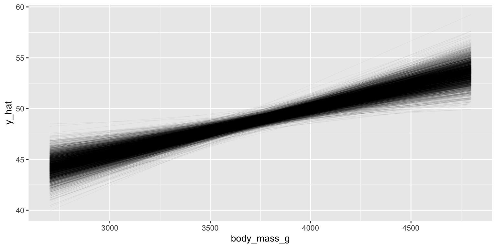
It might be easier to see what’s going on with a random subset of, say, 10 of the posterior draws.
set.seed(10)
draws %>%
# take a random sample of 10 rows
slice_sample(n = 10) %>%
select(.draw, beta0, beta1) %>%
expand_grid(body_mass_g = range(chinstrap$body_mass_g)) %>%
mutate(y_hat = beta0 + beta1 * body_mass_g) %>%
ggplot(aes(x = body_mass_g, y = y_hat, group = .draw)) +
geom_line(linewidth = 1/2, alpha = 1/2)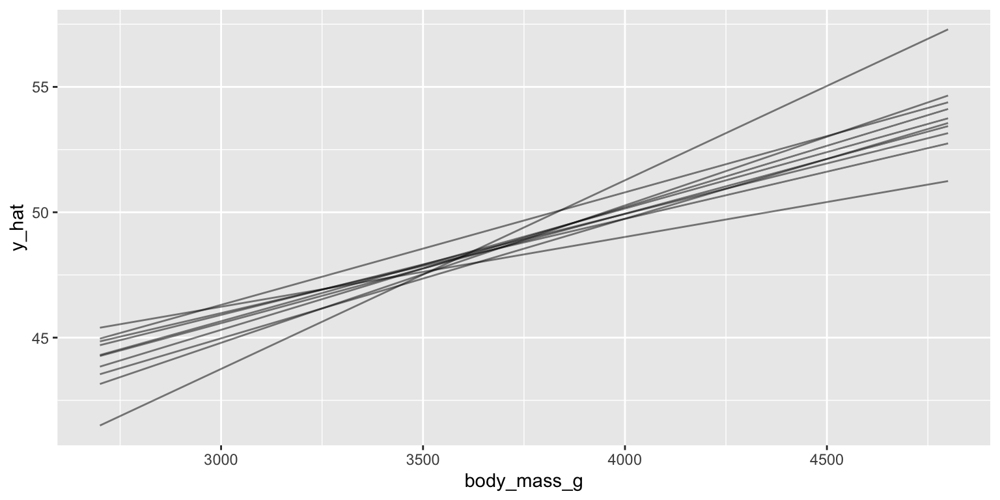
While we’re at it, let’s take 20 draws and do a little color coding.
set.seed(20)
draws %>%
# take a random sample of 20 rows
slice_sample(n = 20) %>%
select(.draw, beta0, beta1) %>%
expand_grid(body_mass_g = range(chinstrap$body_mass_g)) %>%
mutate(y_hat = beta0 + beta1 * body_mass_g) %>%
ggplot(aes(x = body_mass_g, y = y_hat, group = .draw, color = beta0)) +
geom_line() +
scale_color_viridis_c(expression(beta[0]~(the~intercept)), end = .9)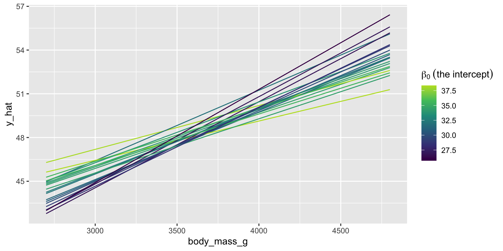
Do you remember how we said \(\beta_0\) and \(\beta_1\) had a strong negative correlation? Notice how the lines computed by lower \(\beta_0\) values also tend to have higher slopes. This will happen all the time with conventional regression models.
The brms package assigns default priors (weakly informative priors) to all the parameters, even though we didn't specify any.In the last part, we made a subset of the penguins data called gentoo, which was only the cases for which species == "Gentoo". Do that again and refit the Bayesian model to those data. Can you then remake some of the figures in this file with the new version of the model?
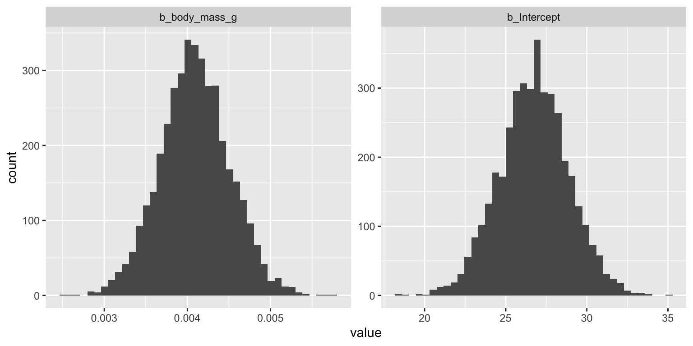
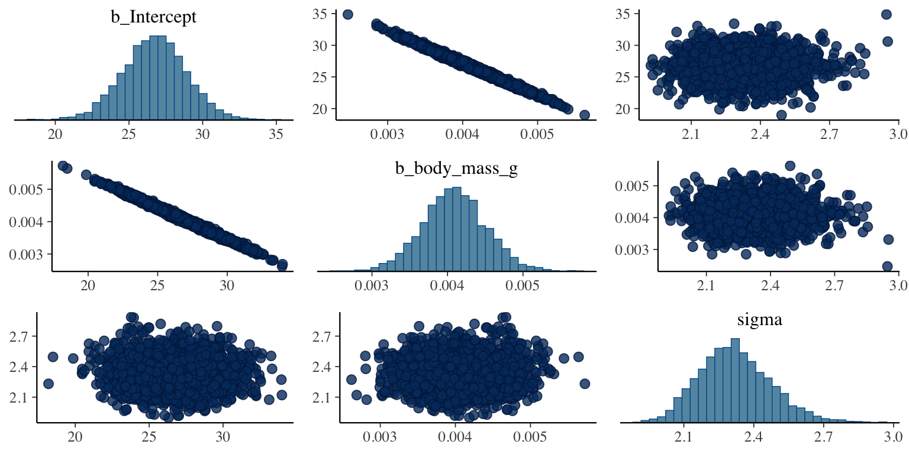
draws2 <- as_draws_df(fit2.b)
# adjust the parameter names
draws2 <- draws2 %>%
mutate(beta0 = b_Intercept,
beta1 = b_body_mass_g)
draws2 %>%
mutate(body_mass_g = mean(gentoo$body_mass_g, na.rm=TRUE)) %>%
mutate(y_hat = beta0 + beta1 * body_mass_g) %>%
ggplot(aes(x = y_hat)) +
# note the changes to this line
stat_halfeye(point_interval = median_qi, .width = c(.5, .99)) +
scale_y_continuous(NULL, breaks = NULL) +
labs(title = "Bayesians have posterior distributions",
subtitle = "The dot marks the median.\nThe thicker line marks the 50% interval, and\nth thinner line marks the 99% interval.")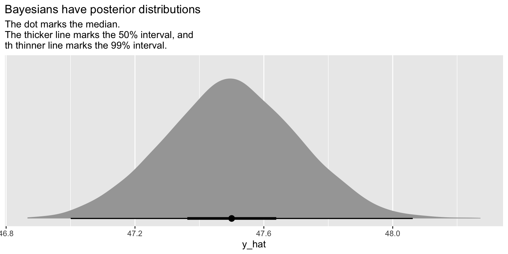
points <- draws2 %>%
rename(`beta[0]` = beta0,
`beta[1]` = beta1) %>%
pivot_longer(cols = c(`beta[0]`, `beta[1]`, sigma),
names_to = "parameter") %>%
group_by(parameter) %>%
summarise(mean = mean(value),
median = median(value),
mode = Mode(value)) %>%
pivot_longer(starts_with("m"), names_to = "statistic")
draws2 %>%
rename(`beta[0]` = beta0,
`beta[1]` = beta1) %>%
pivot_longer(cols = c(`beta[0]`, `beta[1]`, sigma),
names_to = "parameter") %>%
ggplot(aes(x = value)) +
geom_density() +
geom_vline(data = points,
aes(xintercept = value, color = statistic),
size = 3/4) +
scale_color_viridis_d(option = "A", end = .8) +
scale_y_continuous(NULL, breaks = NULL) +
xlab("parameter space") +
facet_wrap(~ parameter, labeller = label_parsed, scales = "free", ncol = 1) +
theme(strip.text = element_text(size = 14))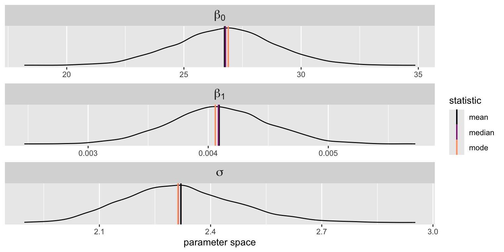
set.seed(20)
draws2 %>%
# take a random sample of 20 rows
slice_sample(n = 20) %>%
select(.draw, beta0, beta1) %>%
expand_grid(body_mass_g = range(gentoo$body_mass_g, na.rm=TRUE)) %>%
mutate(y_hat = beta0 + beta1 * body_mass_g) %>%
ggplot(aes(x = body_mass_g, y = y_hat, group = .draw, color = beta0)) +
geom_line() +
scale_color_viridis_c(expression(beta[0]~(the~intercept)), end = .9)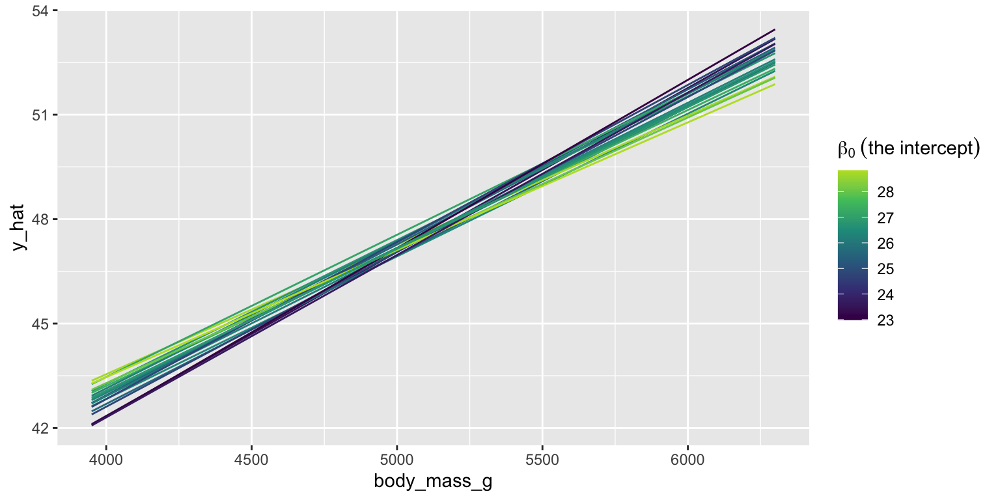
Gelman, A., Hill, J., & Vehtari, A. (2020). Regression and other stories. Cambridge University Press. https://doi.org/10.1017/9781139161879
Kruschke, J. K. (2015). Doing Bayesian data analysis: A tutorial with R, JAGS, and Stan. Academic Press. https://sites.google.com/site/doingbayesiandataanalysis/
McElreath, R. (2020). Statistical rethinking: A Bayesian course with examples in R and Stan (Second Edition). CRC Press. https://xcelab.net/rm/statistical-rethinking/
McElreath, R. (2015). Statistical rethinking: A Bayesian course with examples in R and Stan. CRC press. https://xcelab.net/rm/statistical-rethinking/
R version 4.4.1 (2024-06-14)
Platform: x86_64-apple-darwin20
Running under: macOS 15.4
Matrix products: default
BLAS: /Library/Frameworks/R.framework/Versions/4.4-x86_64/Resources/lib/libRblas.0.dylib
LAPACK: /Library/Frameworks/R.framework/Versions/4.4-x86_64/Resources/lib/libRlapack.dylib; LAPACK version 3.12.0
locale:
[1] en_US.UTF-8/en_US.UTF-8/en_US.UTF-8/C/en_US.UTF-8/en_US.UTF-8
time zone: America/New_York
tzcode source: internal
attached base packages:
[1] stats graphics grDevices datasets utils methods base
other attached packages:
[1] ggdist_3.3.2 broom.mixed_0.2.9.6 broom_1.0.7
[4] brms_2.22.0 Rcpp_1.0.14 ggside_0.3.1
[7] lubridate_1.9.4 forcats_1.0.0 stringr_1.5.1
[10] dplyr_1.1.4 purrr_1.0.4 readr_2.1.5
[13] tidyr_1.3.1 tibble_3.2.1 ggplot2_3.5.1
[16] tidyverse_2.0.0
loaded via a namespace (and not attached):
[1] tidyselect_1.2.1 viridisLite_0.4.2 farver_2.1.2
[4] loo_2.8.0 fastmap_1.2.0 tensorA_0.36.2.1
[7] digest_0.6.37 estimability_1.5.1 timechange_0.3.0
[10] lifecycle_1.0.4 StanHeaders_2.32.10 processx_3.8.5
[13] magrittr_2.0.3 posterior_1.6.0 compiler_4.4.1
[16] rlang_1.1.4 tools_4.4.1 utf8_1.2.4
[19] yaml_2.3.10 knitr_1.49 labeling_0.4.3
[22] bridgesampling_1.1-2 htmlwidgets_1.6.4 curl_6.2.0
[25] pkgbuild_1.4.6 plyr_1.8.9 abind_1.4-8
[28] withr_3.0.2 grid_4.4.1 stats4_4.4.1
[31] xtable_1.8-4 colorspace_2.1-1 future_1.34.0
[34] inline_0.3.21 emmeans_1.10.7 globals_0.16.3
[37] scales_1.3.0 cli_3.6.3 mvtnorm_1.3-3
[40] rmarkdown_2.28 generics_0.1.3 RcppParallel_5.1.10
[43] rstudioapi_0.17.1 reshape2_1.4.4 tzdb_0.4.0
[46] rstan_2.32.6 splines_4.4.1 bayesplot_1.11.1
[49] parallel_4.4.1 matrixStats_1.5.0 vctrs_0.6.5
[52] V8_6.0.3 Matrix_1.7-0 jsonlite_1.8.8
[55] callr_3.7.6 hms_1.1.3 listenv_0.9.1
[58] glue_1.8.0 parallelly_1.42.0 ps_1.9.0
[61] codetools_0.2-20 distributional_0.5.0 stringi_1.8.4
[64] gtable_0.3.6 QuickJSR_1.5.2 palmerpenguins_0.1.1
[67] munsell_0.5.1 pillar_1.10.1 furrr_0.3.1
[70] htmltools_0.5.8.1 Brobdingnag_1.2-9 R6_2.5.1
[73] evaluate_1.0.3 lattice_0.22-6 backports_1.5.0
[76] renv_1.0.7 rstantools_2.4.0 gridExtra_2.3
[79] coda_0.19-4.1 nlme_3.1-164 checkmate_2.3.2
[82] mgcv_1.9-1 xfun_0.51 pkgconfig_2.0.3 PSY-504-Quarto PSY-504-Quarto About /about.html https://github.com/ https://twitter.com
PSY-504-Quarto - Lab: Bayes and Penguins PSY-504-Quarto - Lab: Bayes and Penguins PSY-504-Quarto - Lab: Bayes and Penguins PSY-504-Quarto Princeton University Princeton University
---
title: "Lab: Bayes and Penguins"
subtitle: "Princeton University"
date: "2025-04-02"
author: "KW"
categories: [code, analysis]
format:
html:
self-contained: false
anchor-sections: true
code-tools: true
code-fold: true
fig-width: 8
fig-height: 4
code-block-bg: "#f1f3f5"
code-block-border-left: "#31BAE9"
mainfont: Source Sans Pro
theme: journal
toc: true
toc-depth: 3
toc-location: left
captions: true
cap-location: margin
table-captions: true
tbl-cap-location: margin
reference-location: margin
pdf:
pdf-engine: lualatex
toc: false
number-sections: true
number-depth: 2
top-level-division: section
reference-location: document
listings: false
header-includes:
\usepackage{marginnote, here, relsize, needspace, setspace}
\def\it{\emph}
execute:
freeze: auto
echo: true
message: false
warning: false
fig-align: center
fig-width: 12
fig-height: 8
editor_options:
chunk_output_type: inline
code-overflow: wrap
html:
code-fold: true
code-tools: true
editor: visual
---
Here is a worksheet and assignment that combines Bayes (brms) with tidyverse tools. The focus is on the essentials when it comes to simple linear regression with brms.
Please read and run through this worksheet and answer the conceptual questions that are interleaved within them. At the end of each part, is a coding exercise based on the material you've read until then.
# Part 1: EDA, OLS, BRMS
## Packages and data
Load the primary packages.
```{r, message=FALSE}
library(tidyverse)
library(ggside)
library(brms)
library(broom)
library(broom.mixed)
```
We'll use the `penguins` data set from the **palmerpenguins** package.
quarto-executable-code-5450563D
```r
data(penguins, package = "palmerpenguins")
# Any type of looking at data is a part of EDA
glimpse(penguins)
head(penguins)
```
You might divide the data set by the three levels of `species`.
quarto-executable-code-5450563D
```r
penguins %>%
count(species)
```
To start, we'll make a subset of the data called `chinstrap`.
quarto-executable-code-5450563D
```r
chinstrap <- penguins %>%
filter(species == "Chinstrap")
glimpse(chinstrap)
```
We've done from a full data set with $N = 344$ rows, to a subset with $n = 68$ rows. ("\$" signs hold LaTex snippets)
## More Exploratory data analysis (EDA)
Our focal variables will be `body_mass_g` and `bill_length_mm`. Here they are in a scatter plot.
quarto-executable-code-5450563D
```r
chinstrap %>%
ggplot(aes(x = body_mass_g, y = bill_length_mm)) +
geom_point() +
stat_smooth(method = "lm", formula = 'y ~ x', se = FALSE)
```
We can augment the plot with some nice functions from the **ggside** package.
quarto-executable-code-5450563D
```r
chinstrap %>%
ggplot(aes(x = body_mass_g, y = bill_length_mm)) +
geom_point() +
stat_smooth(method = "lm", formula = 'y ~ x', se = FALSE) +
# from ggside
geom_xsidehistogram(bins = 30) +
geom_ysidehistogram(bins = 30) +
scale_xsidey_continuous(breaks = NULL) +
scale_ysidex_continuous(breaks = NULL) +
theme(ggside.panel.scale = 0.25)
```
It's a good idea to get a sense of the sample statistics. Here are the means and SD's for the two variables.
quarto-executable-code-5450563D
```r
chinstrap %>%
summarise(body_mass_g_mean = mean(body_mass_g),
body_mass_g_sd = sd(body_mass_g),
bill_length_mm_mean = mean(bill_length_mm),
bill_length_mm_sd = sd(bill_length_mm))
```
And you know that more efficient way to compute sample statistics for multiple variables is to first convert the data into the long format with `pivot_longer()`. Then you use a `group_by()` line before the main event in `summarise()`.
quarto-executable-code-5450563D
```r
chinstrap %>%
pivot_longer(cols = c(body_mass_g, bill_length_mm)) %>%
group_by(name) %>%
summarise(mean = mean(value),
sd = sd(value),
# count the missing data (if any)
n_missing = sum(is.na(value)))
```
### Question 1.1: What do the marginal histograms added by ggside tell you about the distribution of body_mass_g and bill_length_mm individually?
```
The distribution of body_mass_g and bill_length_mm are probably not gaussian. They both look kinda bimodal.
```
## OLS
We'll fit the model
$$
\begin{aligned}
\text{bill\_length\_mm}\_i &= \beta_0 + \beta_1 \text{body\_mass\_g}\_i + \epsilon_i \\
\epsilon_i &\sim \operatorname{Normal}(0, \sigma\_\epsilon) \\
\end{aligned}
$$
where `bill_length_mm` is the *dependent* variable or a *response* variable. The sole predictor is `body_mass_g`. Both variables have $i$ subscripts, which indicate they vary across the $i$ rows in the data set. For now, you might think if $i$ as standing for "index." The last term in the first line, $\epsilon$, is often called the *error*, or *noise* term. In the second line, we see we're making the conventional assumption the "errors" are normally distributed around the regression line.
An alternative and equivalent way to write that equation is
$$
\begin{aligned}
\text{bill\_length\_mm}_i &\sim \operatorname{Normal}(\mu_i, \sigma) \\
\mu_i &= \beta_0 + \beta_1 \text{body\_mass\_g}_i
\end{aligned}
$$
which is meant to convey we are modeling `bill_length_mm` as normally distributed, with a conditional mean. You don't tend to see equations written this way in the OLS paradigm. However, this style of notation will serve us better when we start modeling our data with other distributions.
This notation grows on you
Fitting the model with the base **R** `lm()` function, which uses the OLS algorithm.
quarto-executable-code-5450563D
```r
# fit
fit1.ols <- lm(
data = chinstrap,
bill_length_mm ~ 1 + body_mass_g
)
# summarize the results
summary(fit1.ols)
```
The point estimates are in scientific notation. We can pull them with the `coef()` function.
quarto-executable-code-5450563D
```r
coef(fit1.ols)
```
We can compute fitted values, or predictions, with the `predict()` function. Here's the default behavior.
quarto-executable-code-5450563D
```r
predict(fit1.ols)
```
We get one prediction, one fitted value, for each case in the data set. We can express the uncertainty around those predictions with confidence intervals.
quarto-executable-code-5450563D
```r
predict(fit1.ols,
interval = "confidence") %>%
# just the top 6
head()
```
We might also ask for a standard error for each prediction.
quarto-executable-code-5450563D
```r
predict(fit1.ols,
se.fit = TRUE) %>%
data.frame()
```
Instead of relying on predictions from the values in the data, we might instead define a sequence of values from the predictor variable. We'll call those `nd`.
quarto-executable-code-5450563D
```r
nd <- tibble(body_mass_g = seq(from = min(chinstrap$body_mass_g),
to = max(chinstrap$body_mass_g),
length.out = 50))
glimpse(nd)
```
We can insert our `nd` data into the `newdata` argument.
quarto-executable-code-5450563D
```r
predict(fit1.ols,
interval = "confidence",
newdata = nd) %>%
# just the top 6
head()
```
Now we wrangle those predictions a bit and pump the results right into `ggplot()`.
quarto-executable-code-5450563D
```r
predict(fit1.ols,
interval = "confidence",
newdata = nd) %>%
data.frame() %>%
bind_cols(nd) %>%
ggplot(aes(x = body_mass_g)) +
# 95% confidence interval ribbon
geom_ribbon(aes(ymin = lwr, ymax = upr),
alpha = 1/3) +
# point estimate line
geom_line(aes(y = fit)) +
geom_point(data = chinstrap,
aes(y = bill_length_mm))
```
If we wanted to, we could look at the residuals with help from the `residuals()` function.
quarto-executable-code-5450563D
```r
residuals(fit1.ols)
```
Here we might put them in a tibble and display them in a plot.
quarto-executable-code-5450563D
```r
# put them in a tibble
tibble(r = residuals(fit1.ols)) %>%
# plot!
ggplot(aes(x = r)) +
geom_histogram(binwidth = 1)
```
### Question 1.2: Can you predict what the mean value, and standard deviations will be? Why? Calculate it. Compare this against outputs in summary(fit1.ols) and explain. Map the values you find to the latex equations before.
quarto-executable-code-5450563D
```r
# Slope
slope = cov(chinstrap$body_mass_g, chinstrap$bill_length_mm) / var(chinstrap$body_mass_g)
slope
res = residuals(fit1.ols)
var_res = sum(res^2) / (length(chinstrap) - 2)
var_res / sum((chinstrap$body_mass_g - mean(chinstrap$body_mass_g))^2)
# Intercept
mean(chinstrap$bill_length_mm) - slope * mean(chinstrap$body_mass_g)
sd(chinstrap$bill_length_mm)
```
```
The estimate for the intercept is 32.17 with a standard deviation of 3.40. The standard deviation is not computed from the residuals but the simple SD of the y is a good enough estimate here. Both are pretty close to the estimated value from the model.
The mean value for the slope is 0.0045 and the standard deviation is 9.26e-06. These are quite similar to the values from our ols model.
```
$$
\begin{aligned}
\text{bill\_length\_mm}_i = 32.17 + 0.0045 * \text{body\_mass\_g}_i
\end{aligned}
$$
## Bayes with default settings
We'll be fitting our Bayesian models with the **brms** package. The primary function is `brm()`.
`brm()` can work a lot like the OLS-based `lm()` function. For example, here's how to fit a Bayesian version of our OLS model `fit1.ols`.
```{r fit1.b, results = "hide"}
fit1.b <- brm(
data = chinstrap,
bill_length_mm ~ 1 + body_mass_g
)
```
Notice what's happening in the console, below. We'll get into the details of what just happened later. For now, appreciate we just fit our first Bayesian model, and it wasn't all that hard.
Summarize the model.
quarto-executable-code-5450563D
```r
summary(fit1.b)
```
### Question 1.3: Contrast the language of in the `brm()` output from the in the `lm()` output. Ignore 'Rhat,' 'Bulk_ESS,' and 'Tail_ESS' for now.
```
The estimated values are pretty similar in both models.
The frequentist model shows t and p value for all parameters.
The bayesian model shows the 95% confidence interval for all parameters.
```
We can get a quick and dirty plot of the fitted line with the `conditional_effects()` function.
quarto-executable-code-5450563D
```r
conditional_effects(fit1.b)
# %>%
# plot(points = TRUE)
```
## Coefficients and coefficient plots
We might want to compare the coefficient summaries from the OLS model to those from the Bayesian model. Here's the frequentist summary:
quarto-executable-code-5450563D
```r
cbind(coef(fit1.ols), # point estimates
sqrt(diag(vcov(fit1.ols))), # standard errors
confint(fit1.ols)) # 95% CIs
```
We can compute a focused summary of the Bayesian model with the `fixef()` function.
quarto-executable-code-5450563D
```r
fixef(fit1.b)
```
In this case, the results are very similar.
We can also pull this information from our OLS model with the `broom::tidy()` function.
quarto-executable-code-5450563D
```r
tidy(fit1.ols, conf.int = TRUE)
```
If you would like to use the `tidy()` function with your **brms** models, it will have to be the version of `tidy()` from the **broom.mixed** package.
quarto-executable-code-5450563D
```r
tidy(fit1.b)
```
Here's how to wrangle and combine these two results into a single data frame. Then we'll make a coefficient plot.
```{r, warning = F}
bind_rows(
tidy(fit1.ols, conf.int = TRUE) %>% select(term, estimate, contains("conf")),
tidy(fit1.b) %>% select(term, estimate, contains("conf")) %>% filter(term != "sd__Observation")
) %>%
mutate(method = rep(c("lm()", "brm()"), each = 2)) %>%
ggplot(aes(x = estimate, xmin = conf.low, xmax = conf.high, y = method)) +
geom_pointrange() +
scale_x_continuous("parameter space", expand = expansion(mult = 0.2)) +
scale_y_discrete(expand = expansion(mult = 5)) +
facet_wrap(~ term, scales = "free_x")
```
At a superficial level for simple conventional regression type models, the results from a Bayesian `brm()` model will be very similar to those from an OLS `lm()` model. This will not always be case, and even in this example there are many differences once we look below the surface.
## More Questions/Exercise
Go back to the full `penguins` data set. This time, make a subset of the data called `gentoo`, which is only the cases for which `species == "Gentoo"`.
quarto-executable-code-5450563D
```r
gentoo <- penguins %>%
filter(species == "Gentoo")
```
Can you fit the same OLS model to these data?
quarto-executable-code-5450563D
```r
fit2.ols <- lm(
data = gentoo,
bill_length_mm ~ 1 + body_mass_g
)
```
How about plotting the results with `predict()`?
quarto-executable-code-5450563D
```r
gentoo_filtered = gentoo %>% filter(!is.na(body_mass_g))
od2 <- tibble(body_mass_g = gentoo_filtered$body_mass_g)
predict(fit2.ols,
interval = "confidence") %>%
data.frame() %>%
bind_cols(od2) %>%
ggplot(aes(x = body_mass_g)) +
# 95% confidence interval ribbon
geom_ribbon(aes(ymin = lwr, ymax = upr),
alpha = 1/3) +
# point estimate line
geom_line(aes(y = fit)) +
geom_point(data = gentoo_filtered,
aes(y = bill_length_mm))
nd2 <- tibble(body_mass_g = seq(from = min(gentoo$body_mass_g, na.rm=TRUE),
to = max(gentoo$body_mass_g, na.rm=TRUE),
length.out = 50))
predict(fit2.ols,
interval = "confidence",
newdata = nd2) %>%
data.frame() %>%
bind_cols(nd2) %>%
ggplot(aes(x = body_mass_g)) +
# 95% confidence interval ribbon
geom_ribbon(aes(ymin = lwr, ymax = upr),
alpha = 1/3) +
# point estimate line
geom_line(aes(y = fit)) +
geom_point(data = gentoo,
aes(y = bill_length_mm))
```
Can you fit the same default Bayesian `brm()` model to these data?
```{r, results="hide"}
fit2.b <- brm(
data = gentoo,
bill_length_mm ~ 1 + body_mass_g
)
```
How about plotting the results with `conditional_effects()`?
quarto-executable-code-5450563D
```r
conditional_effects(fit2.b)
# %>%
# plot(points = TRUE)
```
Can you make a coefficient plot comparing the new OLS and Bayesian beta coefficients?
```{r, warning = F}
bind_rows(
tidy(fit2.ols, conf.int = TRUE) %>% select(term, estimate, contains("conf")),
tidy(fit2.b) %>% select(term, estimate, contains("conf")) %>% filter(term != "sd__Observation")
) %>%
mutate(method = rep(c("lm()", "brm()"), each = 2)) %>%
ggplot(aes(x = estimate, xmin = conf.low, xmax = conf.high, y = method)) +
geom_pointrange() +
scale_x_continuous("parameter space", expand = expansion(mult = 0.2)) +
scale_y_discrete(expand = expansion(mult = 5)) +
facet_wrap(~ term, scales = "free_x")
```
# Part 2: Penguins and their posteriors
## Exploring model results
We can extract the posterior draws from our Bayesian models with the `as_draws_df()` function.
quarto-executable-code-5450563D
```r
as_draws_df(fit1.b)
```
Note the meta data. We can get a sense of the full posterior distributions of the $\beta$ parameters with plots.
quarto-executable-code-5450563D
```r
# wrangle
as_draws_df(fit1.b) %>%
pivot_longer(starts_with("b_")) %>%
# plot!
ggplot(aes(x = value)) +
# geom_density(fill = "grey20") +
geom_histogram(bins = 40) +
facet_wrap(~ name, scales = "free")
```
We might summarize those posterior distributions with basic descriptive statistics, like their means, SD's, and inner 95-percentile range.
quarto-executable-code-5450563D
```r
as_draws_df(fit1.b) %>%
pivot_longer(starts_with("b_")) %>%
group_by(name) %>%
summarise(mean = mean(value),
sd = sd(value),
ll = quantile(value, probs = 0.025),
ul = quantile(value, probs = 0.975))
```
Notice how these values match up exactly with those from `fixef()`.
quarto-executable-code-5450563D
```r
fixef(fit1.b)
```
Thus,
- The Bayesian posterior mean is analogous to the frequentist point estimate.
- The Bayesian posterior SD is analogous to the frequentist standard error.
- The Bayesian posterior percentile-based 95% (credible) interval is analogous to the frequentist 95% confidence interval.
These are not exactly the same, mind you. But they serve similar functions.
We can also get a sense of these distributions with the `plot()` function.
quarto-executable-code-5450563D
```r
plot(fit1.b)
```
Ignore the trace plots on the right for a moment. And let's consider the `pairs()` plot.
quarto-executable-code-5450563D
```r
pairs(fit1.b)
# we can adjust some of the settings with the off_diag_args argument
pairs(fit1.b, off_diag_args = list(size = 1/4, alpha = 1/4))
```
### Question 2.1 : In the parlance of Probability, do you know what is the term by which the distributions in the diagonal of the above plot are known as? And the distributions in the off-diagonal?
```
The diagonal ones are the marginal distributions of individual parameters.
The off-diagnoal ones are the bivariate marginal distributions, or the joint distributions of the paired two parameters, marginalized over the remaining parameters.
```
Notice how the two $\beta$ parameters seem to have a strong negative correlation. We can quantify that correlation with the `vcov()` function.
quarto-executable-code-5450563D
```r
vcov(fit1.b) # variance/covariance metric
vcov(fit1.b, correlation = TRUE) # correlation metric
```
This correlation/covariance among the parameters is not unique to Bayesian models. Here's the `vcov()` output for the OLS model.
quarto-executable-code-5450563D
```r
vcov(fit1.ols) # variance/covariance metric
```
I'm not aware of an easy way to get that output in a correlation metric for our OLS model. Here's how to compute the correlation by hand.
quarto-executable-code-5450563D
```r
cov_xy <- vcov(fit1.ols)[2, 1] # covariance between the intercept and slope
var_x <- vcov(fit1.ols)[1, 1] # variance for the intercept
var_y <- vcov(fit1.ols)[2, 2] # variance for the slope
# convert the covariance into a correlation
cov_xy / (sqrt(var_x) * sqrt(var_y))
```
That code follows the definition of a covariance, which can be expressed as
$$
\text{Cov}(x, y) = \rho \sigma_x \sigma_y,
$$
where $\sigma_x$ is the standard deviation for x, $\sigma_y$ is the standard deviation for y, and $\rho$ is their correlation. And thus, you can convert a covariance into a correlation with the formula
$$
\rho = \frac{\sigma_{xy}}{\sigma_x \sigma_y},
$$
where $\sigma_{xy}$ is the covariance of x and y.
## Draws
Let's save the `as_draws_df()` output for our model as an object called `draws`.
quarto-executable-code-5450563D
```r
draws <- as_draws_df(fit1.b)
glimpse(draws)
```
For each parameter in the model, we have 4,000 draws from the posterior.
### Question 2.2: How does this concept relate to representing uncertainty? Can you anticipate how predictions are made based upon these 4000 draws and the linear regression formula?
```
Since we hae 4000 posterior samples, the spread can tell us how uncertain we are about each parameter. We can also get the mean and the 95% confidence interval from the distribution.
For each value of x, the predictions are made by averaging the predicted values across the 4000 samples of the parameters.
```
$$
\widehat{\text{bill\_length\_mm}}_i = \beta_0 + \beta_1 \text{body\_mass\_g}_i.
$$
Let's break the 4000 draws down with our `draws` object.
```{r, warning = F}
# adjust the parameter names
draws <- draws %>%
mutate(beta0 = b_Intercept,
beta1 = b_body_mass_g)
# Note: go through this one line at a time
draws %>%
select(.draw, beta0, beta1) %>%
mutate(body_mass_g = mean(chinstrap$body_mass_g)) %>%
mutate(y_hat = beta0 + beta1 * body_mass_g) %>%
ggplot(aes(x = y_hat)) +
geom_histogram(bins = 40) +
labs(title = "Bayesians have posterior distributions",
x = expression(hat(italic(y))*'|'*italic(x)==3733.1)) +
coord_cartesian(xlim = c(47, 51))
```
Here's what that is for the OLS model.
quarto-executable-code-5450563D
```r
predict(fit1.ols,
newdata = tibble(body_mass_g = mean(chinstrap$body_mass_g)),
interval = "confidence") %>%
data.frame() %>%
ggplot(aes(x = fit, xmin = lwr, xmax = upr, y = 0)) +
geom_pointrange() +
scale_y_continuous(NULL, breaks = NULL) +
labs(title = "Frequentists have point estmates and 95% CI's",
x = expression(hat(italic(y))*'|'*italic(x)==3733.1)) +
coord_cartesian(xlim = c(47, 51))
```
Another handy way to present a Bayesian posterior is as a density with a point-interval summary below.
```{r, warning = F}
library(ggdist) #for stat_half_eye and mean_qi
draws %>%
mutate(body_mass_g = mean(chinstrap$body_mass_g)) %>%
mutate(y_hat = beta0 + beta1 * body_mass_g) %>%
ggplot(aes(x = y_hat)) +
stat_halfeye(point_interval = mean_qi, .width = .95) +
# scale_y_continuous(NULL, breaks = NULL) +
labs(title = "Bayesians have posterior distributions",
x = expression(hat(italic(y))*'|'*italic(x)==3733.1)) +
coord_cartesian(xlim = c(47, 51))
```
The dot at the base of the plot is the posterior mean, and the horizontal line marks the 95% percentile-based interval. If you'd like to mark the median instead, set `point_interval = median_qi`. If you're like a different kind of horizontal interval, adjust the `.width` argument.
```{r, warning = F}
draws %>%
mutate(body_mass_g = mean(chinstrap$body_mass_g)) %>%
mutate(y_hat = beta0 + beta1 * body_mass_g) %>%
ggplot(aes(x = y_hat)) +
# note the changes to this line
stat_halfeye(point_interval = median_qi, .width = c(.5, .99)) +
scale_y_continuous(NULL, breaks = NULL) +
labs(title = "Bayesians have posterior distributions",
subtitle = "The dot marks the median.\nThe thicker line marks the 50% interval, and\nthe thinner line marks the 99% interval.",
x = expression(hat(italic(y))*'|'*italic(x)==3733.1)) +
coord_cartesian(xlim = c(47, 51))
```
## About those means, SD's, and intervals.
You can describe a Bayesian posterior in a lot of different ways. Earlier we said the posterior mean is the Bayesian point estimate. This isn't strictly true. Means are very popular, but you can summarize a posterior by its mean, median, or mode.
Let's see what this looks like in practice. First, we compute and save our statistics for each of our model parameters.
```{r, warning = F}
points <- draws %>%
rename(`beta[0]` = beta0,
`beta[1]` = beta1) %>%
pivot_longer(cols = c(`beta[0]`, `beta[1]`, sigma),
names_to = "parameter") %>%
group_by(parameter) %>%
summarise(mean = mean(value),
median = median(value),
mode = Mode(value)) %>%
pivot_longer(starts_with("m"), names_to = "statistic")
# what?
points
```
Now plot.
```{r, warning = F}
draws %>%
rename(`beta[0]` = beta0,
`beta[1]` = beta1) %>%
pivot_longer(cols = c(`beta[0]`, `beta[1]`, sigma),
names_to = "parameter") %>%
ggplot(aes(x = value)) +
geom_density() +
geom_vline(data = points,
aes(xintercept = value, color = statistic),
size = 3/4) +
scale_color_viridis_d(option = "A", end = .8) +
scale_y_continuous(NULL, breaks = NULL) +
xlab("parameter space") +
facet_wrap(~ parameter, labeller = label_parsed, scales = "free", ncol = 1) +
theme(strip.text = element_text(size = 14))
```
### Question 2.3: Discuss the skew in $\sigma$.Why it might arise, etc.?
```
$\sigma$ might be skewed becasue a few reasons.
First, it can't be negative, so it is bounded below 0.
Second, we might have a weak prior for $\sigma$, which will result in posterior uncertainty that includes the possibility of high residual variability, resulting in a longer right tail in the posterior.
Third, there could be some outliers that inflates $\sigma$, making its posterior distribution more right-skewed.
```
- The mean is the **brms** default summary, and McElreath (2015, 2020) defaulted to the mean in his texts.
- The median is also available for many **brms** functions, and it's what Gelman et al (2020) recommend.
- The mode can be attractive for very skewed distributions, and it's what Kruschke (2015) used in his text.
With many **brms** functions, you can request the median by setting `robust = TRUE`. For example:
quarto-executable-code-5450563D
```r
fixef(fit1.b) # means
fixef(fit1.b, robust = TRUE) # medians
```
### Question 2.4: Given the skew in sigma and what you know about summary statistics, what might be the implication of using just the mean, median, or mode of posteriors to make a prediction?
```
The mean is pulled toward the tail, so using the mean of sigma will lead to wider predicted intervals (more conservative), but we might overestimate uncertainty in new predictions if the skew is strong.
The median is robust to the skew, so using the median provides a balanced summary that is not too influenced by tail values.
The mode is often below the mean when the distribution is right skewed, so using the mode of sigma could underestimate uncertainty and produce overconfident predictions.
Overall, it is better to use the entire posterior, which full captures the uncertainty, including the skew, instead of using only a single value of the distribution.
```
#### SD's and MAD SD's.
Earlier we said the posterior SD is the Bayesian standard error. This isn't strictly true. You can also use the *median absolute deviation* (MAD SD). If we let $M$ stand for the median of some variable $y$, which varies across $i$ cases, we can define the MAD SD as
$$
\textit{MAD SD} = 1.4826 \times \operatorname{median}_{i = 1}^n |y_i - M|,
$$
where $1.4826$ is a constant that scales the MAD SD into a standard-deviation metric. Here's what this looks like in practice.
```{r, warning = F}
# go through this line by line
draws %>%
select(beta0) %>%
mutate(mdn = median(beta0)) %>%
mutate(`|yi - mdn|` = abs(beta0 - mdn)) %>%
summarise(MAD_SD = 1.4826 * median(`|yi - mdn|`))
```
Base **R** also has a `mad()` function.
quarto-executable-code-5450563D
```r
?mad
draws %>%
summarise(MAD_SD = mad(beta0))
```
You can request the MAD SD from many **brms** functions by setting `robust = TRUE`.
quarto-executable-code-5450563D
```r
fixef(fit1.b) # SD
fixef(fit1.b, robust = TRUE) # MAD SD
```
- To my eye, many authors (e.g., Kruschke, McElreath) just use the SD.
- Gelman et al (see Section 5.3) recommend the MAD SD.
#### Bayesian intervals.
Bayesians describe the widths of their posteriors with intervals. I've seen these variously described as confidence intervals, credible intervals, probability intervals, and even uncertainty intervals. My recommendation is just pick a term, and clearly tell your audience what you mean (e.g., at the end of a Method section in a journal article).
To my eye, the most popular interval is a 95% percentile-based interval. 95% is conventional, perhaps due to the popularity of the 95% frequentist confidence interval, which is related to the 0.05 alpha level used for the conventional $p$-value cutoff. However, you can use other percentiles. Some common alternatives are 99%, 89%, 80%, and 50%.
Also, Bayesian intervals aren't always percentile based. An alternative is the highest posterior density interval (HPDI), which has mathematical properties some find desirable.
**brms** only supports percentile-based intervals, but it does allow for a variety of different ranges via the `prob` argument. For example, here's how to request 80% intervals in `summary()`.
quarto-executable-code-5450563D
```r
summary(fit1.b, prob = .80)
```
Regarding interval widths:
- 95% Intervals are widely used.
- McElreat likes 89% intervals, and uses them as a default in his **rethinking** package.
- Some of the **bayesplot**, **ggdist**, and **tidybayes** functions return 80% intervals.
- Some of the **ggdist**, and **tidybayes** functions return 66% or 50% intervals.
- I've heard Gelman report his fondness for 50% intervals on his blog (https://statmodeling.stat.columbia.edu/2016/11/05/why-i-prefer-50-to-95-intervals/).
Regarding interval types:
- Percentile-based intervals are widely used in the Stan ecosystem, and are supported in texts like Gelman et al.
- Kruschke has consistently advocates for HPDI's in his articles, and in his text.
### Posterior summaries with **tidybayes**.
Matthew Kay's **tidybayes** package (https://mjskay.github.io/tidybayes/) offers an array of convenience functions for summarizing posterior distributions with points and intervals. See the *Point summaries and intervals* section of Kay's *Extracting and visualizing tidy draws from brms models* vignette (https://mjskay.github.io/tidybayes/articles/tidy-brms.html#point-summaries-and-intervals) for a detailed breakdown. In short, the family of functions use the naming scheme `[median|mean|mode]_[qi|hdi]`. Here are a few examples.
quarto-executable-code-5450563D
```r
draws %>% mean_qi(beta0) # mean and 95% percentile interval
draws %>% median_qi(beta0, .width = .80) # median and 80% percentile interval
draws %>% mode_hdi(beta0, .width = c(.5, .95)) # mode, with 95 and 50% HPDI's
```
As an aside, the `Mode()` function we used a while back was also from **tidybayes**.
### Spaghetti plots.
Remember how we said the `draw` was something like 4,000 separate equations for our Bayesian model? Let's see that again.
quarto-executable-code-5450563D
```r
draws %>%
select(.draw, beta0, beta1) %>%
mutate(body_mass_g = mean(chinstrap$body_mass_g)) %>%
# here's the equation
mutate(y_hat = beta0 + beta1 * body_mass_g) %>%
# subset the top 6
head()
```
One way we might emphasize the 4,000 equations is with a spaghetti plot. When we display the fitted line for `bill_length_mm` over the range of `body_mass_g` values, we can display a single line for each posterior draw. Here's what that can look like.
```{r, warning = F}
range(chinstrap$body_mass_g)
# Note: go through this one line at a time
draws %>%
select(.draw, beta0, beta1) %>%
expand_grid(body_mass_g = range(chinstrap$body_mass_g)) %>%
mutate(y_hat = beta0 + beta1 * body_mass_g) %>%
# plot!
ggplot(aes(x = body_mass_g, y = y_hat, group = .draw)) +
geom_line(linewidth = 1/10, alpha = 1/10)
```
It might be easier to see what's going on with a random subset of, say, 10 of the posterior draws.
```{r, warning = F}
set.seed(10)
draws %>%
# take a random sample of 10 rows
slice_sample(n = 10) %>%
select(.draw, beta0, beta1) %>%
expand_grid(body_mass_g = range(chinstrap$body_mass_g)) %>%
mutate(y_hat = beta0 + beta1 * body_mass_g) %>%
ggplot(aes(x = body_mass_g, y = y_hat, group = .draw)) +
geom_line(linewidth = 1/2, alpha = 1/2)
```
While we're at it, let's take 20 draws and do a little color coding.
```{r, warning = F}
set.seed(20)
draws %>%
# take a random sample of 20 rows
slice_sample(n = 20) %>%
select(.draw, beta0, beta1) %>%
expand_grid(body_mass_g = range(chinstrap$body_mass_g)) %>%
mutate(y_hat = beta0 + beta1 * body_mass_g) %>%
ggplot(aes(x = body_mass_g, y = y_hat, group = .draw, color = beta0)) +
geom_line() +
scale_color_viridis_c(expression(beta[0]~(the~intercept)), end = .9)
```
Do you remember how we said $\beta_0$ and $\beta_1$ had a strong negative correlation? Notice how the lines computed by lower $\beta_0$ values also tend to have higher slopes. This will happen all the time with conventional regression models.
### Question 2.5: We have done all this without yet specifying a prior. What do you think is going on?
```
The brms package assigns default priors (weakly informative priors) to all the parameters, even though we didn't specify any.
```
## Question/Exercise:
In the last part, we made a subset of the `penguins` data called `gentoo`, which was only the cases for which `species == "Gentoo"`. Do that again and refit the Bayesian model to those data. Can you then remake some of the figures in this file with the new version of the model?
quarto-executable-code-5450563D
```r
# wrangle
as_draws_df(fit2.b) %>%
pivot_longer(starts_with("b_")) %>%
# plot!
ggplot(aes(x = value)) +
# geom_density(fill = "grey20") +
geom_histogram(bins = 40) +
facet_wrap(~ name, scales = "free")
pairs(fit2.b)
```
```{r, warning = F}
draws2 <- as_draws_df(fit2.b)
# adjust the parameter names
draws2 <- draws2 %>%
mutate(beta0 = b_Intercept,
beta1 = b_body_mass_g)
draws2 %>%
mutate(body_mass_g = mean(gentoo$body_mass_g, na.rm=TRUE)) %>%
mutate(y_hat = beta0 + beta1 * body_mass_g) %>%
ggplot(aes(x = y_hat)) +
# note the changes to this line
stat_halfeye(point_interval = median_qi, .width = c(.5, .99)) +
scale_y_continuous(NULL, breaks = NULL) +
labs(title = "Bayesians have posterior distributions",
subtitle = "The dot marks the median.\nThe thicker line marks the 50% interval, and\nth thinner line marks the 99% interval.")
points <- draws2 %>%
rename(`beta[0]` = beta0,
`beta[1]` = beta1) %>%
pivot_longer(cols = c(`beta[0]`, `beta[1]`, sigma),
names_to = "parameter") %>%
group_by(parameter) %>%
summarise(mean = mean(value),
median = median(value),
mode = Mode(value)) %>%
pivot_longer(starts_with("m"), names_to = "statistic")
draws2 %>%
rename(`beta[0]` = beta0,
`beta[1]` = beta1) %>%
pivot_longer(cols = c(`beta[0]`, `beta[1]`, sigma),
names_to = "parameter") %>%
ggplot(aes(x = value)) +
geom_density() +
geom_vline(data = points,
aes(xintercept = value, color = statistic),
size = 3/4) +
scale_color_viridis_d(option = "A", end = .8) +
scale_y_continuous(NULL, breaks = NULL) +
xlab("parameter space") +
facet_wrap(~ parameter, labeller = label_parsed, scales = "free", ncol = 1) +
theme(strip.text = element_text(size = 14))
set.seed(20)
draws2 %>%
# take a random sample of 20 rows
slice_sample(n = 20) %>%
select(.draw, beta0, beta1) %>%
expand_grid(body_mass_g = range(gentoo$body_mass_g, na.rm=TRUE)) %>%
mutate(y_hat = beta0 + beta1 * body_mass_g) %>%
ggplot(aes(x = body_mass_g, y = y_hat, group = .draw, color = beta0)) +
geom_line() +
scale_color_viridis_c(expression(beta[0]~(the~intercept)), end = .9)
```
## References
Gelman, A., Hill, J., & Vehtari, A. (2020). *Regression and other stories*. Cambridge University Press. https://doi.org/10.1017/9781139161879
Kruschke, J. K. (2015). *Doing Bayesian data analysis: A tutorial with R, JAGS, and Stan*. Academic Press. https://sites.google.com/site/doingbayesiandataanalysis/
McElreath, R. (2020). *Statistical rethinking: A Bayesian course with examples in R and Stan* (Second Edition). CRC Press. https://xcelab.net/rm/statistical-rethinking/
McElreath, R. (2015). *Statistical rethinking: A Bayesian course with examples in R and Stan*. CRC press. https://xcelab.net/rm/statistical-rethinking/
## Session information
quarto-executable-code-5450563D
```r
sessionInfo()
```